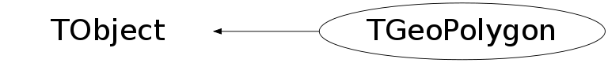

class TGeoPolygon: public TObject
TGeoPolygon - Arbitrary polygon class A polygon is a 2D shape defined by vertices in the XY plane. It is used by TGeoXtru class for computing Contains() and Safety(). Only the pointers to the actual lists of XY values are used - these are not owned by the class. To check if a point in XY plane is contained by a polygon, this is splitted into an outscribed convex polygon and the remaining polygons of its subtracton from the outscribed one. A point is INSIDE if it is contained by the outscribed polygon but NOT by the remaining ones. Since these can also be arbitrary polygons at their turn, a tree structure is formed: P = Pconvex - (Pconvex-P) where (-) means 'subtraction' Pconvex-P = P1 + P2 + ... where (+) means 'union' *Note that P1, P2, ... do not intersect each other and they are defined by subsets of the list of vertices of P. They can be splitted in the same way as P* Therefore, if C(P) represents the Boolean : 'does P contains a given point?', then: C(P) = C(Pconvex) .and. not(C(P1) | C(P2) | ...) For creating a polygon without TGeoXtru class, one has to call the constructor TGeoPolygon(nvert) and then SetXY(Double_t *x, Double_t *y) providing the arrays of X and Y vertex positions (defined clockwise) that have to 'live' longer than the polygon they will describe. This complication is due to efficiency reasons. At the end one has to call the FinishPolygon() method.
Function Members (Methods)
public:
| TGeoPolygon() | |
| TGeoPolygon(Int_t nvert) | |
| TGeoPolygon(const TGeoPolygon&) | |
| virtual | ~TGeoPolygon() |
| void | TObject::AbstractMethod(const char* method) const |
| virtual void | TObject::AppendPad(Option_t* option = "") |
| Double_t | Area() const |
| virtual void | TObject::Browse(TBrowser* b) |
| static TClass* | Class() |
| virtual const char* | TObject::ClassName() const |
| virtual void | TObject::Clear(Option_t* = "") |
| virtual TObject* | TObject::Clone(const char* newname = "") const |
| virtual Int_t | TObject::Compare(const TObject* obj) const |
| Bool_t | Contains(Double_t* point) const |
| virtual void | TObject::Copy(TObject& object) const |
| virtual void | TObject::Delete(Option_t* option = "")MENU |
| virtual Int_t | TObject::DistancetoPrimitive(Int_t px, Int_t py) |
| virtual void | TObject::Draw(Option_t* option = "") |
| virtual void | TObject::DrawClass() constMENU |
| virtual TObject* | TObject::DrawClone(Option_t* option = "") constMENU |
| virtual void | TObject::Dump() constMENU |
| virtual void | TObject::Error(const char* method, const char* msgfmt) const |
| virtual void | TObject::Execute(const char* method, const char* params, Int_t* error = 0) |
| virtual void | TObject::Execute(TMethod* method, TObjArray* params, Int_t* error = 0) |
| virtual void | TObject::ExecuteEvent(Int_t event, Int_t px, Int_t py) |
| virtual void | TObject::Fatal(const char* method, const char* msgfmt) const |
| virtual TObject* | TObject::FindObject(const char* name) const |
| virtual TObject* | TObject::FindObject(const TObject* obj) const |
| void | FinishPolygon() |
| virtual Option_t* | TObject::GetDrawOption() const |
| static Long_t | TObject::GetDtorOnly() |
| virtual const char* | TObject::GetIconName() const |
| virtual const char* | TObject::GetName() const |
| Int_t | GetNvert() const |
| virtual char* | TObject::GetObjectInfo(Int_t px, Int_t py) const |
| static Bool_t | TObject::GetObjectStat() |
| virtual Option_t* | TObject::GetOption() const |
| virtual const char* | TObject::GetTitle() const |
| virtual UInt_t | TObject::GetUniqueID() const |
| Double_t* | GetX() |
| Double_t* | GetY() |
| virtual Bool_t | TObject::HandleTimer(TTimer* timer) |
| virtual ULong_t | TObject::Hash() const |
| virtual void | TObject::Info(const char* method, const char* msgfmt) const |
| virtual Bool_t | TObject::InheritsFrom(const char* classname) const |
| virtual Bool_t | TObject::InheritsFrom(const TClass* cl) const |
| virtual void | TObject::Inspect() constMENU |
| void | TObject::InvertBit(UInt_t f) |
| virtual TClass* | IsA() const |
| Bool_t | IsClockwise() const |
| Bool_t | IsConvex() const |
| virtual Bool_t | TObject::IsEqual(const TObject* obj) const |
| Bool_t | IsFinished() const |
| virtual Bool_t | TObject::IsFolder() const |
| Bool_t | IsIllegalCheck() const |
| Bool_t | TObject::IsOnHeap() const |
| virtual Bool_t | TObject::IsSortable() const |
| Bool_t | TObject::IsZombie() const |
| virtual void | TObject::ls(Option_t* option = "") const |
| void | TObject::MayNotUse(const char* method) const |
| virtual Bool_t | TObject::Notify() |
| void | TObject::Obsolete(const char* method, const char* asOfVers, const char* removedFromVers) const |
| static void | TObject::operator delete(void* ptr) |
| static void | TObject::operator delete(void* ptr, void* vp) |
| static void | TObject::operator delete[](void* ptr) |
| static void | TObject::operator delete[](void* ptr, void* vp) |
| void* | TObject::operator new(size_t sz) |
| void* | TObject::operator new(size_t sz, void* vp) |
| void* | TObject::operator new[](size_t sz) |
| void* | TObject::operator new[](size_t sz, void* vp) |
| TGeoPolygon& | operator=(const TGeoPolygon&) |
| virtual void | TObject::Paint(Option_t* option = "") |
| virtual void | TObject::Pop() |
| virtual void | TObject::Print(Option_t* option = "") const |
| virtual Int_t | TObject::Read(const char* name) |
| virtual void | TObject::RecursiveRemove(TObject* obj) |
| void | TObject::ResetBit(UInt_t f) |
| Double_t | Safety(Double_t* point, Int_t& isegment) const |
| virtual void | TObject::SaveAs(const char* filename = "", Option_t* option = "") constMENU |
| virtual void | TObject::SavePrimitive(ostream& out, Option_t* option = "") |
| void | TObject::SetBit(UInt_t f) |
| void | TObject::SetBit(UInt_t f, Bool_t set) |
| void | SetConvex(Bool_t flag = kTRUE) |
| virtual void | TObject::SetDrawOption(Option_t* option = "")MENU |
| static void | TObject::SetDtorOnly(void* obj) |
| void | SetNextIndex(Int_t index = -1) |
| static void | TObject::SetObjectStat(Bool_t stat) |
| virtual void | TObject::SetUniqueID(UInt_t uid) |
| void | SetXY(Double_t* x, Double_t* y) |
| virtual void | ShowMembers(TMemberInspector& insp) |
| virtual void | Streamer(TBuffer& b) |
| void | StreamerNVirtual(TBuffer& b) |
| virtual void | TObject::SysError(const char* method, const char* msgfmt) const |
| Bool_t | TObject::TestBit(UInt_t f) const |
| Int_t | TObject::TestBits(UInt_t f) const |
| virtual void | TObject::UseCurrentStyle() |
| virtual void | TObject::Warning(const char* method, const char* msgfmt) const |
| virtual Int_t | TObject::Write(const char* name = 0, Int_t option = 0, Int_t bufsize = 0) |
| virtual Int_t | TObject::Write(const char* name = 0, Int_t option = 0, Int_t bufsize = 0) const |
protected:
| virtual void | TObject::DoError(int level, const char* location, const char* fmt, va_list va) const |
| void | TObject::MakeZombie() |
private:
| void | ConvexCheck() |
| Bool_t | IsRightSided(Double_t* point, Int_t ind1, Int_t ind2) const |
| Bool_t | IsSegConvex(Int_t i1, Int_t i2 = -1) const |
| void | OutscribedConvex() |
Data Members
public:
| enum { | kGeoConvex | |
| kGeoFinishPolygon | ||
| kGeoACW | ||
| }; | ||
| enum TObject::EStatusBits { | kCanDelete | |
| kMustCleanup | ||
| kObjInCanvas | ||
| kIsReferenced | ||
| kHasUUID | ||
| kCannotPick | ||
| kNoContextMenu | ||
| kInvalidObject | ||
| }; | ||
| enum TObject::[unnamed] { | kIsOnHeap | |
| kNotDeleted | ||
| kZombie | ||
| kBitMask | ||
| kSingleKey | ||
| kOverwrite | ||
| kWriteDelete | ||
| }; |
protected:
| TObjArray* | fDaughters | list of concave daughters |
| Int_t* | fInd | [fNvert] list of vertex indices |
| Int_t* | fIndc | [fNconvex] indices of vertices of the outscribed convex polygon |
| Int_t | fNconvex | number of points of the outscribed convex polygon |
| Int_t | fNvert | number of vertices (must be defined clockwise in XY plane) |
| Double_t* | fX | ! pointer to list of current X coordinates of vertices |
| Double_t* | fY | ! pointer to list of current Y coordinates of vertices |
Class Charts
{kind=link}
{kind=link}
{kind=link}
{kind=link}

Function documentation
Bool_t Contains(Double_t* point) const
Check if a point given by X = point[0], Y = point[1] is inside the polygon.
void FinishPolygon()
Decompose polygon in a convex outscribed part and a list of daughter polygons that have to be substracted to get the actual one.
Bool_t IsRightSided(Double_t* point, Int_t ind1, Int_t ind2) const
Check if POINT is right-sided with respect to the segment defined by IND1 and IND2.
Bool_t IsSegConvex(Int_t i1, Int_t i2 = -1) const
Check if a segment [0..fNvert-1] belongs to the outscribed convex pgon.
Double_t Safety(Double_t* point, Int_t& isegment) const
Compute minimum distance from POINT to any segment. Returns segment index.
void SetNextIndex(Int_t index = -1)
Sets the next polygone index. If index<0 sets all indices consecutive in increasing order.